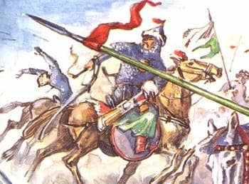
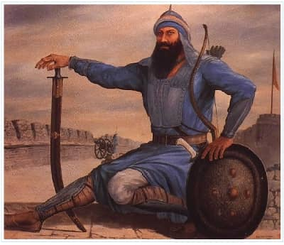

“Bu Çinli ve Kalmukların askeri çokmuş. Bunlar bize saldıracaklarmış. Neskara gördüğünü diri yutan dev imiş. Bunlara at, kız hediye edelim, hayvan ve altın hazırlayalım” dedi Cakıp.
“Ey baba, düşmanı gördüğüm zaman böyle korkup duruyorsun. Yüreğin sökülüp alınmış gibi. Artık korkma! Canını sıkma. Yaşadığım halde halkımı nasıl onlara tutup vereyim. Kaderimde varsa oktan öleyim. Kara canı esirgemeden mücadele edeyim. Bu kudurmuş Kalmukların kahramanlığını deneyeyim. Cezasını vereyim” dedi manas.
Manas’ın düşüncesini Akbalta destekledi, komşu Türk kabilelerine, altı günlük uzaktaki Kazaklara haber gönderdi.
Neskara’nın altı bin askeri yolunu şaşırmış, aç düşmüştü. Cakıp’ın kışlağı olan Keng-Aral’a gelip yol üzerindeki Moğolların yurdunu bastılar. On bin atı yağmaladılar. Sayıları beş yüz olmayan Moğollar “nereden çıktı bu haydutlar, ya savaşmanın yolunu bilmiyorlar, ya da küstahlık ediyorlar” diye onların peşine düştüler.
“Hey, siz kimsiniz? Düşmanınız olan kim?” diyerek hayvanlarını çaldıran Moğol beyi Caysangbay at üzerinden bağırdı.
Dil bilen Sart Basangkul seslendi:
“Hey, Cakıp Bay’ın avulu nerede? Onu arıyoruz”
“Hey, o Kulan yaylasında. Onlar için mi bizim hayvanlarımızı soyup götürüyorsunuz? Onlar çöpünü yedirtmeyen kötü insanlardır. Öç alacaksanız onlardan alınız, hayvanlarımızı geri verin.”
Atları çok olan kurnaz ihtiyar Cakıp, oğlunu saklayıp, yolumuzu sapıttı, hile yaptı, bunun atlarını geri verip, Cakıp’ı yakalayalım diye Neskara bir çare düşündü.
“Hey, hayvanlarına dokunmayacağız. Buraya gel. Bize Cakıp’ın oğlu Manas’ı bul,” diye Basangkul, Caysang’ı çağırdı.
“Onca insan arasında yol bilen biri yok mudur? Yol bilmeden orda yönetilir mi? Hey, at ve avulumu yağmalamasan bile Manas savaşçıya dokunmam.”
Basangkul, Caysang’ı yakalamak için onu kovaladı. Moğol’un okçusu yay ile Sart’ı vurdu. Sanagkul’un öldüğünü gören Neskara, Moğollara saldırdı. Caysang dayanamadan avuldan çıkıp kaçtı.
Neskara Moğolların avulunu yağmaladı. Erkeklerin başını kesti, on beş yaşındaki kızlardan yüz otuzunu, kara kaşlı güzel gelinlerden iki yüzünü seçip, ganimet aldı. Cakıp haber verdikten sonra, davul çalındı, Kırgızlar ayağa kalktı. Cakıp’ın avuluna sığınan Altaylı Türklerden, katılan her kabileden ordu kuruldu, Akbalta asker başı oldu.
Manas’ın altı yüz kişilik ordusu, dağ geçidinde Neskara’nın önüne geldi. Aniden çıkan toplu ordu, Neskara’nın askerini şaşırttı. Arkalarına bakamadan kuşatıldılar. Manas’ın ordusu Kalmuk için Çin’in arasındaki sınırda Neskara’yı yarım gün tuttu. Altaylı Türkler, Kazak, Nayman, Moğol, Uyşunlardan meydana gelen büyük bir ordu, Manas’a yardım için geldi. Neskara öfkelendi.
Çinlilerden Dang-Dang isimli bir pehlivan atını oynatıp, mızrağını uzatıp, gürzünü eline alıp meydana çıktı. Kırgız tarafından Moğol’un savaşçı Künös pehlivan gürzünü sürükleyerek ortaya çıktı. İki savaşçı, mızrak oynatıp birbirlerine saldırdılar. Taraflar birbirlerine üstün gelemediler. Mızraklardan kendilerini kurtaramadılar. Gürzlerini düzeltip vuruştular. Gürzleri ellerinden çıktıktan sonra onu almak için eğildiler.
Dang-Dang pehlivan atının ayağı yere saplanan zavallı Künös’ü kuşatıp yere vurup düşürdü. Künös öldü. “Kuvvetli devinizi öldürdüm. Şimdi eceli gelen çıksın” diye Dang-Dang ensesindeki saçları düğümleyip atını ortada oynattı. Bunu gören kahraman oğlan Kökçö Savaşçı meydana doğru fırladı.
Kökçö babasını kıramadı, atını çevirip yerine döndü. Aydarhan, Altay Kazak halkının savaşçıydı. Mızrağını alıp, atını kamçıladı. Dang-Dang’a bütün saldırdı. Aydarhan, Dang-Dang’ın mızrağına vurdu, bu Çinli deve mızrağını sapladı. Bu sırada Çinlilerden Küdöng isimli pehlivan Aydar Han’a saldırdı. Aydarhan, Küdöng pehlivandan kaçtı. Bunu gören Manas, tahammül edemedi, bayrağı Akbalta’ya verdi. Atını dolu dizgin koşturup, Küdöng’e yöneldi. Küdöng’ü kalpak gibi uçurup, ezdi geçti.
Onların Irangsoo isimli pehlivanı Manas’a mızrak fırlattı. Manas onu devirdi. Yere düşen, uçuruma başı saplanan Irangsoo’ya mızrağıyla vurdu. Çinlilerin nişancısı Manas’a ok attı. Manas ikinci yayı çekene kadar kılıçla Şangmusar’ın kellesini uçurdu. Yaralanan atını amcası Bay’a verdi. Bay dua etti.
Manas, Manas olduktan, Manas adını aldıktan beri yaşı on üç oluncaya kadar onca düşmanı yenmemişti. Bu kadar kan dökmemişti, bu kadar çok öfkelenmemişti, bu kadar çok düşmanın hakkından gelmemişti. Neskara’yı beklemeye başladı.
O zamanlar, karşısına çıkanı sağ koymayan, yaşı on dokuz olan Neskara, Türk oğluna düşman biriydi. Saçları dağınık, çakır gözlü, yassı burunluydu. Kırk Moğol girip oba kurabilecek kadar büyüktü. Dev Neskara, Çabdar’ı kamçıladı.
Neskara askerlerinden uzaklaşıp, kara yola geldi. Pekin’e doğru kaçarken gözleri ateş gibiydi. Ak-kula ile koşmakta olan Manas adlı er arkasından yetişti, omzuna sırlı mızrağını vurdu. Mızrak devin omzuna saplanmıştı. Neskara atını yukarı çekti, yorgun düşen ak-kula yokuşta Manas’ı üzerinde uçuyordu. Çabdar ak bulutlu göğün altında biten otların üzerinde uçuyordu.
Manas inatla onun peşinden kovalayarak gidiyordu. Manas dağ sırtına geldiğinde, babası Cakıp Tuuçunak’ı koşturup, hızla ona yetişti.
Dur oğlum, dur! - diye Cakıp yalvararak arkasından koştu. Çin askeri Neskara kaçtıktan sonra, önderleri öldükten sonra yenildiklerini kabul ettiler. Boşuna çabalama, Manas nefes aldı ve ordusunun başına döndü. Neskara’nın ordusu, Manasın hükmü altına girdi, bayrakları indi. Moğolların Neskara’nın askerinin içindeki 400 civarındaki Sart’ın malını mülkünü zapt ettiklerini duyan Manas kızdı. Cakıp, Tanrı’ya sığınıp, ak boz kısrağı kestirdi. Neskarad’dan kalan ganimet için kalabalık halk akşama kadar bekledi.
Manas, Neskara’nın askerleri arasındaki kızlara, kadınlara, ihtiyar ve koca karılara, çoluk çocuğu zarar veren, mal mülkü yağmalayanları idam ettirdi. Onların atlarını, eşyalarının yağma edilen halka verdi. Çinli askerin silahlarını, atlarını alıp onları bıraktı.
Manas Kendi Ordusunu Kurmaya Başlıyor
Cakıp avuluna giren Altay Türkleri, Kangaylıklar, Moğol, Alçın, Uyşun Argın, Kazark Noygut kabilelerinin reisleri Kuldur’un sözünü doğru buldular. Manas’a can yoldaşı vermek istediler. Büyük küçük bir araya gelip antlaştılar. Manas, yaşı on dörde geldiğinde, köpeğini koyuverdi, kuşunu salıverdi, Altay’ı dolaştı, diğer tarafta Opol dağı, Kangay’a kadar tepeleri aşıp, nehirlerden geçip, ormanları dolaştı, avcılığa kendini verip yoldaşlarıyla on-on beş gün kaybolurdu.
Bir defasında, Manas’ın yedi yoldaşıyla birlikte kayboluşunun üzerinden on bir gün geçmişti. Cakıp’ın gönlü dayanamayarak “onların haberini duyan kimse yok, bu oğula ne oldu, yaramazlık edip Kalmuklarla tutuşup başı derde mi girdi acaba? Niye böyle gecikti?” diye dertlendi.
Cakıp’ın aklı karıştı. On bir asker Manas’ı ortalarına almış olarak geldiler. Manas ise onları hiç umursamadan mağrur duruyordu. Bunu gören Cakıp bayıldı, konuşamadı.
Manas öfkelendi, gözlerinden ateş çıktı. Dördünü yakaladı, gömlek gibi salladı, kaldırıp yere çarptı. Üzerine gelen altısını yere yıktı, ikisini bir eliyle birleştirip tuttu. Manas canlı kalan askerlerden kırmızı perçemlerini kopardı, onları saldı. Manas’ın yanında olan delikanlılar alay ederek askerlerin atlarının kuyruklarını kestiler.
Cakıp Bay ocağını yeniledi. İkinci Hanımı Bakdöölöt bir oğlan doğurdu, “Manas”ımın dayansa dağı, eğilse direği olsun” diye adını Abike koydu. Cakıp Bay’ın sadece hayvanları değil, soyu da çoğaldı, avulu genişledi, otlağı uzadı. Komşusu Kalmuk, Tırgot, Moğollar ile yerleri paylaştı, sınırları sağlamlaştırdı, taş koyup üzerine yazı yazdırdı, kağıda mühür bastırdı, herkes kendi yerine sahip oldu.
Altay’daki yüksek dağlar çok güzel yerlerdi. Kuzeyinde Altın Köl güneyinde Barköl vardı. Buralarda kayberen adlı kuş çok olurdu. Savaşçı Manas avlanmaya çıktı. Beraberinde kırk boz oğlan vardı. Bir o kadar da yoldaş gelmişti. Av kuşunu beraberinde götürdü, ceylan avlamak için yay da aldı, karakuşları da vurmak istedi.
Manas ve arkadaşları Çarkastan’ın çukuruna çadır dikip keçe evi kurdular. Boz oğlanlar yarış yaptılar. Köpeklerini saldılar, yay çektiler, kuşlarını saldılar, sungur kuşu oynadılar, kurt, tilki, mavi tilki avladılar. Güreş yaptılar. İp çekme oyunu yaptılar.

Manas’ın Çinlilerle savaşı.
Manas iki çocuğu Kalmuk ve Çin taraflarına gözcü çıkardı. Bir günlük yola gönderdi onları, tepelere nöbetçi yerleştirdi. Urkul nehri boyunca üç yol kavşağında, ormanda, altı gün vaziyeti yokladılar. Yedinci gün Manas’ın gönderdiği çocuklar geri döndüler.. Esen Han’ın yük yükleyen kırk beş deveden oluşan kervanı, altı şive, on Uygur, on Kalmuk korumasında geliyordu. Dokuz yüz asker Nuuker adlı bir Savaşçının idaresinde, arkadan geliyordu.
Nuuker, bunlara rastladığında asker olsa öldürün, çocuklar ise sürüp gelin diye tecrübeli yüz askeri gönderdi. Urkul nehrinin kıyısına geldiler. Nehirden geçemeyen askerler kıyıda şaşırıp kaldı. Seksen asker aniden Manas’a saldırdı. Manas kıpırdamadan durdu. Askerleri, çocuklar yok ettiler. Manas, hiçbir şey olmamış, hiçbir şey görmemiş gibi seksen çocukla birlikte kaldığı yere gelip, geceledi.
Yüz askerinden haber alamayan Nuuker ordusunu sürerken kara nehire geldi. Manas ve arkadaşları nehrin öteki kıyısında durup Nuuker’in askerlerini saydılar.
“Ormanın her tarafını ateşe verelim. Askerlerimizi çok gösterelim.” Manas her tarafta alev alev ateş yaktırdı.
Ertesi gün Nuuker, kavak ve söğüt kestirip sal yaptırdı, adamlarını suya gönderdi. Dört salla suya girenler birbirlerine çarptı. Çoğu suda boğuldu. Nuuker’in askerleri Manas’ı kuşatma altına aldılar. Bu sırada, Kökçö, Kımkar adlı askerle dövüşüyordu. Kökçö mızrağıyla Kımkar’ı Kök katırdan devirdi. Bolcong adlı savaşçı aniden Kökçö’ye vurmak üzereyken savaşçı Manas onu yayla öldürdü.
Bunu gören Nuuker, tahammül edemedi. Manas’a doğru geldi. Manas da korkmadan atına vurdu, Nuuker’in karşısına çıktı. Bu sırada Kökçö’ye saldıran Nuuker, onu attan tutup indirdi. Kökçö’yü taşa vurmak üzereyken, Manas yetişip geldi ve Nuuker’i tutup yukarıya kaldırdı. Kökçö, Nuuker’in elinde, Nuuker Manas’ın elinde dimdik dikilerek gidiyordu. Nuuker’i atın yelesine koydu. Kökçö’nün eli Nuuker’in böğründe kalmıştı.
Manas Daha İlk gençlik Yıllarında Komutandı
Manas, Nuuker’in başını kopardı. Çocuklar “Manas” diye bağırıp, kalan askerlere saldırdılar. Dağlar da Manas, Manas diye haykırdı. Ormanlar da Manas, Manas diye çığırdı. Aydıng Köl’ün kenarı buz gibi parlıyordu, bulutlara değen sivri dağların göçü geliyordu.
Altay’daki Kırgız Cakıp’ın avulunda zurna ve davul çalındı. Tek davul çalınırsa, kötü haberin işareti diye halk telaşlanırdı. Zurnanın çalınması ise, iyiliğin işareti idi. Sabah erkenden çalınan yulaflı zurna sesi dağı neşelendiriyordu.
Noygut, Totu ve Sartlardan haber geldi. Öğlene doğru yurt reisleri gelecektir” dendi. Akbalta’nın yardımcıları “Türk kardeşlerimizin hepsi gelecek.” dedi. Haberdar edilen salabetli avu reisleri, beyzadeleri Cakıp’ın beyaz evine geldiler. Halk bekledi, aksakallar yere baktılar, Kahramanlar suskun suskun durdular. Manas daha kuvvetli daha muhteşem görünüyordu. Aksakal Berdike’nin karşısına geldi. Berdike beyaz keçeyi yere koydu.
“Bizim dediğimiz uygun ise, emrettiğimiz yerine getirilirse, Hanı böyle seçelim.” Akbalta ile Berdike Cakıp Bay’ı beyaz keçeye oturttular.”
Şimdi bulduk Hanımız Cakıp olsun” diye beyaz keçenin üzerindeki Cakıp’ı kaldırmaya kalktılar. Kalabalık içinden çıkan aksakallar, bilgiçler Cakıp ile Manas’ı beyaz keçeye koyup kaldırdılar. Cakıp keçeden indi, Hanlığa Manas’ı göstermesine halk da razı oldu. Kambar Boz’un atlarından kırmızı kısrak Manas’ın önünde kesildiğinde halk sakindi. Manas Halk kalpağını giyip Toruçaar’a bindi. Nogoy Han’dan kalan bayrağı Cakıp derilere sararak yüklerinin arasında saklamıştı. Onu direğe çekti.
Cakıp Bay, Manas han oldu diye dokuz gün şölen düzenledi. Manas, Bay ile danışıp, delikanlıları gönderdi. Kaşgar tarafından Bakay’ı getirtti. Kaplan Bakay dağ gibi biriydi, kaplan gibi bakardı. Boğanın boynu gibi boynu vardı. Gök tulpar (kanatlı at) a benzeyen bir ata binmişti, mavi elbise giymişti. Sağ omuzunda her şeyi altı ay önceden haber veren, bilmediği şeyleri bildiren, duymadığı şeyleri duyuran melek vardı. Manas, Kalmuk ve Çin’i dolaşarak dilini, sırrını, âdetlerini öğrenen, sözü kesen bilge Bakay’ı han kendine danışman yaptı.
Argın’ın Hanı Acıbay babasına darıldığı için sarayını terk etmişti. Kendisi gibi birini arıyordu, Manas’ın kahramanlığını duymuştu. Savaşçıyı rüyasında görmüştü. Arkadaş olacağım diyerek at sürdü. Sonunda Bakay’a rastladı.
Han manas, akıllılara ve bilgelere danışarak kırk kahraman seçti. Kırk yiğide başka kabilelerden Moğol Caysang’ı, Kuldurdan Çalıbay’ı Mançudan Macik’ı, Kangaylı Keldikey’i, Danggıt’tan gelen Kayıp Han’ı, Dağalık’tan Munar’ı, yine Altaylıların hepsinden; Alçın, Uyşun Nayman, Abak, Kırgız, Kıpçak, Noygut, Nogoy, Özbek, Totu, Nabat, Andıcanlı, Kazak, Karakalpak, Döölös topladı. Kırk yiğide baş olarak Kırgıl tayin edildi.
Kırk kahraman, Han Manas’ın etrafında dolaşıp durdu. Manas, gökten inen, altı kılıcı arkadaşlarına verdi. Zülfikar’ı kendisi aldı. Kambarboz’un atlarından kısrak aldırdı. Han Manas , dedesi Nogoy’dan kalan bulat kılıcını aldırdı. Düşmana doğru sallandığı zaman kırk yedi arşın uzayan kılıcı; Açalbars’ı Bakay’ın eline verdi, kırk kahraman diz üstünde oturup, ant içtiler. Her biri albars kılıcı öptü, kanını değdirdi.
Manas’ın kırk yiğidinin hepsi savaşçı diye adlandırıldı. Her birine at otağ verildi. Kırk yiğidin atların muska takıldı. Manas iki dizgin bir yuları elinde tuttu. Kırgız’ın ocağını düzeltti, kopanları birleştirdi, çevresini genişletti. Kalmuk ve Moğol’u eşit yaptı. Halkı, dertlerinden kurtulup, sıkıntılarını çözüp, “Tanrım, Han Manas’ı koru” diyerek yaşamaya başladı.
Manas, dokuz yıl han oldu. Manas halkı muhtaçlıktan kurtardı. Savaşçısı arttı. Altay, Kazak, Türk, Uygur, Moğol ve komşu kabileler arasında saygın oldu. Kırgızlar onlardan kız alıp, verdiler. Onları ata bindirdiler, onlarla mal mülk değiştirdiler, kervan kurup ticaret yaptılar. Manas’ın toprağı, Altay’dan Kaşgar’a, Kaşgar’dan Tibet’e, Tibet’ten Semerkand’a kadar vardı.
Manas’ın saltanatını, Kalmuk Hanı olan yalancı Alevke, Çin Hanı olan kurnaz Esen Han, Mançu Hanı Neskara çekemediler. Kinini, üç kez gönderdiği ordusundan ayrılıp kaldığını hatırladılar. “Bekleyin de görün Kırgızlar” diyerek haberin gelmesini beklediler. Kendi aralarında anlaşıp “Türkleri iple boğmaktansa, onları birbirine düşürmek lazım” dediler. Kalmuk ve Çin’in rahipleri, casusluk yapmak için avulları dolaştılar. Kaşgar, Moğol, Samarkand’a giden kervan Kırgız elinden geçiyordu. Bunlar Alevke ile Esen Han’ın gönderdiği adamlar idi.
Esen Han, birbirine yakın olan Türkleri, Uygur ve Kalmukları Kırgızlara karşı kışkırttı. Manas’ın gücünü, gazabını bilen komşuları başkaldırdılar, düşman olmaktan vazgeçebildi. Altay’daki durumu iyi bilen Manas, Çin ve Kalmukların hesaplarını sezerek Kalmuk ile Kırgız sınırına nöbetçi koydu. Ordusunu hazır tuttu.
Manas’ın Savaşları
Kalmuk hanı Alevke, Dangu hükümdarı Kayıp Dangı’ı saraya çağırdı. Kayıp Dang, gitmeyi kabul etti. Şehir yöneticilerini çağırıp, Karaşehir’in suyunu kestirmek için adam gönderdi. Alevke’nin emrini duyan rahipler bu haberi Manas’a ulaştırdı.
Manas, Karaşehir’in suyuna zehir koyacak olan Kalmuk ve Moğol’ u öldürdü. O gün Dangu şehrine akın yaptılar. Kayıp Dang’ın kızı Karaberk, kırk kız arkadaşıyla halk arasında kalıp düşmana direndi ve kahramanları atlarından devirdi. Karaberk, Makay’ı da yaraladı. Manas, nişancı kızı canlı yakalatıp getirtti. Manas, han kızının güzelliğini görünce, onunla evlenmek istedi.
Kız, babasının öldüğünü öğrenince; “Manas’a varmak değil, babamın intikamını almak istiyorum.” Dedi.
“Kız nazı ile sevilir.” diyen Manas, Karaberk’in karşı koyuşundan, kahramanlığından hoşnut oldu. Ele geçen Kayıp Dang’ı kızının yanına getirdiler, Kayıp Dang ile Manas barıştı. Üç kahraman dost oldular. Kayıp Dang düğün düzenledi. Bay, Akbalta, Berdike, Bakay, Dangu şehrine baş dünür olarak geldiler. Han, Manas şanına yakışır bir şekilde Karaberk ile evlendi. Kayıp Dang, Türk ustalarına kızı Karaberk için on iki katlı ev yaptırdı. İçerisini türlü eşyalarla süsledi.
Cakıp avuldan altmış akıllıyı topladı. Aksakallılarla kurultay yaptı. Bu yine ne diyecek acaba diye Bay’ın sözünü dinlediler. Beş gün sonra Manas’ın karşısına çeşitli boylar tarafından kurulmuş sekiz yüz bin kişilik ordu çıktı. Manas, ilk seferini Altay’daki büyük hana karşı, Tekes Han’a karşı yaptı.
Han Manas, Tekes Han’a mektup gönderdi: Tekes Han, adamına Doğudaki Kırgızları gözleyin, düşmanı görürseniz haber verin.” diye onu casusluğa gönderdi. Yedi gün sonra casuslar gelerek: “Kuyas gece yola koyuldu. Kırgızların saldıracağı yere varıp sihir yaptı, söğüt ve kavakların hepsini insan şekline getirip çok asker varmış gibi gösterdi.
Ertesi gün Kuyaz gelip Tekes’in gönlünü avuttu. Tekes, sınıra gelip baktı ki düşmana karşı kılıçlarını hazır tutan sayısız asker var. Tekes Kuyas’ın hünerinden memnun oldu. Bunu gören Kırgızlar ölecektir diye yardım istemeden yattı.
Dördüncü gün Manas büyük ordusuyla Tekes’in topraklarına girdi. Manas, onların karşısına ben varayım, ben gidip bakayım. Kalmuklar yakalasa beni yakalasın, sen kurtulursun. Onlara göründükten sonra kaçalım, sırrını bilelim.”
Kalmuklar ile Kırgızlar Arasındaki Çatışma Her Zaman Sürdü
Bakay, düşmana görünerek yürüdü. Kalmuk askerleri kımıldamadılar. Bakay buna şaşırdı. Bakay mızrağını uzatsa onlar da hepsi birden mızraklarını uzattılar. Bakay eline kılıç alsan, kalabalık asker de aynı hareketi yaptı. Bağırsa bağırdılar.
Bunun hile olduğunu anlayan Bakay, gelip durumu Manas’a bildirdi. Kırgızlar büyülü askerlerle dövüşmedi. Askerlerin ayağına barut koyup ateşlediler. Alandaki kalabalık askerler, kamış, çiğ ile beraber yandı.
Manas’ın askerlerinin sarayını kuşattığını duyan Tekes Han, Sihirbaz Kuyas’ı öldürüp, kendisi de kalbine hançer saplayıp intihar etti. Manas, Tekes han’ın halkını ve askerini saraya toplayıp emretti. Manas Aydarkan’ı yanına alarak askerlerini denetledi. Han Manas, Tekes Han’ın halkını tamamını Tötön’ün geçidine çağırttı. Karaça tereddüt etti yanına Saykal isimli kızı, yetişip geldi. Kız çubuk gibi ince belli, erkeksi giyinen, kızıl kaş, düğme baş, süt gibi beyaz tenli, yuttuğu boğazından görünen, güzel biriydi.
Han Manas bundan memnun olmadı. Teyiş’i beyaz keçeye oturtu. Han adetince her taraftan tutup kaldırttı. Tekes’in, nakışları altından olan kızıl sancağı çekildi ve hanlığı ilan edildi. Temir han’ın en küçük oğlu Teyiş Han, babasının şehrinin idaresini ele aldıktan sonra büyük bir şölen düzenledi. Kalmuklar, bu kez Altaylara, Kagayara ve Mançurya’daki Türk kabilelerine Kırgızlara, Moğollara ve pek çok halka kendilerini göstermek istediler.
“Türk kabilelerinden neyimiz eksikmiş? Deyip Kırgızlar şölen düzenlediler. Biz de doğuda bir gürültü koparalım” dediler Kalmukların gençleri ve ihtiyarları. Şölen kıvamına geldiğinde, sarı beyaz ata binen, düğme saçlı, on yedi yaşındaki Kalmuk kızı Saykal, ortaya çıktı. Kız olmasına rağmen, savaş silahlarını kuşanıp, yürük atına binip, mızrak alan Saykal, heybeti ile duruyordu.
Erkekler çevrilmiş olarak durdular. Saykal ile tutuşmak için kimse çıkmadı. Kırgızlar Tekes’in yanında pehlivanlığıyla savaşçılığı bir arada olan Saykal’a karşı koyan insanın olmadığını duymuşlardı. Kız dövüşmeye devam etti. Savaşçının mızrağına vurup, kalbine nişan eyleyip göğsüne mızrak vurdu.
Sendeleyen Manas’ın, bindiği atı da bir yana eğerek kendini düzeltti. İkinci karşılaşmada kız, Saykal bağırarak, gelip mızrak vurdu. Mızrağın ucu Manas’ın sağ koltuğunda girip arkasından çıktı. Mızraklarını bırakıp, tutuşup erkek güreşine geçtiler. Saplanan mızrağın arkasından sallanıp durmasına aldırmayan Manas Saykal ile dövüşmeye devam etti. Sağ tarafına gelen Saykal kuvvetli Manas’ı göğsünden aldığında arslan çoktan gevşemişti. Kız Saykal, Manas’ın sağ omzuna vurdu, kamçıyla vurup onu at üzerinden devirmek istedi.
Akbalta’nın aslanlarından biri olan Çubak atını, ok gibi hızlı koşturarak ortaya geldi, “Hey bu engiş (birbiri at üzerinde çekmek ve eyerden düşürmeye çalışmak) değil, dövüştür” diye Saykal’ın bindiği atın başına vurdu. Saykal’ın atı ürküp bir yana saptığında Çubak, Manas’ın sol omzundan doğrulttu.
Akbalta ok gibi hızlı bir şekilde ortaya geldi.
“Kavga çıkacak, savaşçılar durun!”
Bu esnada Kalmuk’un Dogo adlı savaşçısı çıkıp Akbalta’ya saldırdı. Kazaklardan Aydarkan, Kırgızlardan Bakay çıkıp beklenmedik olaylar meydana gelmesin diye araya hakem koydular. Teyiş hakem oldu. Hakem oyunu durdurdu, direnenlere sert davrandı.
Savaşçı Manas üzerine saplanan mızrağın ucundaki kılları temizleyip etinden çekip çıkardı. Yiğidin yan kısmında açılan yaradan kan akıyordu. Bu Manas’ın zoruna gitmişti. Orcemin adlı ilacını yara üzerine örttü, akan kan durdu, gözleri açıldı. Manas, ateşlenip atını oynatıp, tekrar meydana çıktı. Kız Saykal da erkek gibi haykırdı. “Niye güzelliğine kapılıp kurtardım ki kadını. Düşmana acıyan kendisi yaralanır,” diye kendine kızarak mızrak uzattı Manas.
İki dev, ardı ardına tutuştu. Üçüncü kez tutuşmada Saykal atın sağrısına gitti. Manas, atının sendelendiğine bakmadan Saykal’a mızrak savurdu. Saykal şaşırdı. Bir yana çevrilerek kendi adamlarının arasına kaçtı. Manas, Aksargıl atını koşturup peşine düştü. Manas babasının himayesine sığınan Saykal’a yetişemedi. Askerleri yarıp giremedi, “Savaşçınızı çıkarınız!” diye Kalmukların karşısına çıkıp bağırdı. Teyiş, Aydarkan öfkeli Manas’a geldiler.
Kız Saykal, Manas’ın gözüne görünmedi. Manas, geçen ki tutuşmayı unutup, kızın kahramanlığından memnun oldu. “Tanrı kısmet eylese alınacak kadın imiş” dedi. Karaça’nın evine sık sık bakıp, Kız Saykal’ı kalabalık içinde aradı. Şölen bitmek üzereyken atlar geldi. Yarışı Manas’ın Akkulası kazandı. Manas Akkula’nın kazandığı ödülü dört kabile halkına dağıttı. Altı gün süren şölen bittikten sonra Manas kalabalık askeriyle Aral’a geldi, askerler mola verdiler.
Kara-Köl denen yeri, Orgo Han yönetiyordu. Orgo Han Türk kabileleriyle fazla savaşmış biri değildi. Bu defa haberci kötü haberle gelir. “Altaylı Kırgızlar baş kaldırıp boyun eğen kabileler ile ordu kurdular, Turgout, Moğol, Uygur ve Kalmular’ı kaplayıp Pekin’e yürüyorlar. Gafil Kalmuklara “Kırgızların yolunu kesin. Tedbir alın” diye haber geldi.
Orgo Han davul çaldırdı. Adamlarından, valilere ve komutanlara mektup gönderdi, onları haberdar etti. Asker topladı. Kalabalık Kalmukların askerlerinin sayısı yedi yüz bine ulaştı.
Orgo Han’ın ordusu saraydan uzakta, Kırgız ordusunun önünü kesip karşılaşmayı beklediler. Manas’ın ordusu gözüktü. İki tarafın askerleri burun buruna gelerek durdular. Orgo Han, tarafından Atan isimli pehlivan çıktı. O bir dev idi.
Orgo Han’ın askerleri iki tarafa bölünüp Atan’a hürmeti için yol açtılar. Bu sırada Orgo Han’ın askerlerinin içinden bir ihtiyar sıyrılıp çıkarak pehlivan Atan’ın önüne geldi. İhtiyar, inat ederek Atan’a yol vermedi. Bu sırada Atan eğilerek ihtiyarı almak istedi. Atan’ın bindiği at, ürkerek ihtiyara yaklaşmadı. Atan, atını tepip kamçıladı, ihtiyara ulaştı ve onu omzundan tutup aldı.
Bu sırada ihtiyar kıyamet kopardı. Atan’ın belinden tutup, attan alarak kaldırıp yere attı. Göğsüne bastı. Atan’ın başını kopardı. İhtiyar Dankara’ya binip Kırgızlara doğru gitti. Kalmuklar, ihtiyar insan mıdır, cin midir diye şaşkın kaldılar. Baktılar ihtiyar, Kırgızların Köyüş isimli sihirbazıymış. O sabah Kalmukların arasına girip casusluk yapıyordu. Sonunda Altan’ı yenerek dönmüştü.
Kendine gelen Kalmuklar, Orgo Han’ın yanına gelerek, askerlerini Kırgızların üzerine sevk ettiler. Dövüş başladı. Kalkanlar parçalanıp, kanlar döküldü, oklar vızlayıp, yer sarsıldı, büyük bir gürültü koptu. Manas, Orgo Han’ı yarı canlı halde bıraktı. Bayrağı devrildi, Han öldü. Hansız savaşmayan Kalmuk askerleri kaçtılar. Manas, Orgo Han’ın askerlerinin peşine düşmedi. Manas’ın acısı vardı, onun da çok askeri ölmüştü. O, dövüşten sonra bu yerleri görmek istemedi. Manas Bakay’ın peşinden dışarıya çıktı.
Savaşan iki tarafın kaybı aynıydı. Savaş alanı insan kanıyla çamur olmuştu. Yerden çıkan toz dumandan, güneş görünmüyordu. Cesetler dağ gibi olmuştu. Kahramanlar ölmüştü, atlar uzanıp yatıyordu. Toprakta eyer, kırılmış mızrak, sapsız balta, kınsız kılıç, Kalmuk Kırgız karışık çamur gibi yoğrulup yatıyordu.
Manas bu manzaraya bakarken gençler gözüne ilişti. Oradan uzaklaşmak istedi. Manas yedek atını saldı. Bakay’ın yanına geldi, başını ağabeyinin omzuna koyup kemikleri sızlayarak ağladı. Manas, kıvrıldı. Bilgiç Bakay konuşmaya başladı:
“Yenmek, düşmanı öldürmek demek değildir. Yenmek halkın kurtulması demektir. Halkı kurtarmak erkeğin işidir. Tanrı bunu herkesin alnına yazmış değildir. Nadiren birilerine yazar. Senin alnına işte bu yazılmıştır. Ne zaman halkını muradına erdirirsen, o zaman görevini yerine getirmiş olursun. Seni bunun için Tanrıdan istedi halk. Ağlama! Sen erkeksin, savaşçısın! Erkekler milletinin ocağını mızrak ve kılıcın ucuyla genişletir. Halk savaşçılığı, kılavuzluğu ile altın sırık olup destekler.”

Bir Kırgız savaşçısı.
Manas’ın Şöhreti Yayılıyor
Sabah Han Manas savaşta ölen kahramanlarını, silahlarıyla birlikte bir çukura gömdürdü. Her birinin başına bir taş koymuştu, taşlar Opol dağı gibi birikti. Gökte, çoban yıldızı parlarken, tan yeri ağarırken, Manas Han’ın karargahına Orgo Han’ın hatunu Samankul hanım Kırgız sarığını giydi. İki çocuğunu yanına aldı. Saraydan on boz atı seçip, danışmanı Iraman’ı tercümanı yaptı. Araba dolusu değerli hediyelerle geldi. Kırgızların adetince, oğlu Karatay’ı öne çıkarıp Iraman’ın oğluna şarkı söyletti. Iraman’ın oğlu Manas’ın kırk yiğidinden biri oldu. Karatay adı yerine Irçı oğlan diye adlandırıldı.
Opol dağının içinde, ıssız bir yerde bulunan Akun şehri, kırk beş sene han olarak yönetmişti. Dokuz yolun kavşağında olan bu şehre her yandan gelen kervanlar eksik olmazdı. Halk zenginleşmişti. Şehir refahlıydı. Akunbeşim’in Kalmuk ve Çin’de itibarı vardı.. Tekes Han ile Orgon Han, kardeş gibiydiler.
Bunu bilen Manas, Tekes Han’dan sonra Orol Han, rahat durmaz, diye Akun Han tarafına adamlarının gönderip yol durumunu ve düşmanın hareketini öğrendi. Akun daha önce yola nöbetçi koyup, asker toplayıp, Kalmuk ve Çinlilere mektup yazıp habercisiyle göndermişti.
Akun Han, oğulları, kadın ve kızları, kocakarı ve ihtiyarları şehirden çıkardı. Surdan uzakta bir yerde Kırgız ordusunu bekledi. Baltanın sapına gibi bıyıkları, doru aygırın yelesine benzer örgüsü, göğsünde zırhı, başında miğferi, saçında takısı, elinde topuzu, yanında kalkanı, koynunda yeleği olan sert belli savaşçıları topladı.
Manas ise aksakallıları, akıllıları, kırk yiğidini ve komutanlarını topladı, onlara danıştı. Manas, ordusunu çukur ve düzlüklerden uzak tutarak, dağ geçidinden değil ama dağ sırtından geçerek, ıssız yollardan zamanından evvel Akun Han’ın şehrine vardı. Akun Han’ın büyük ordusu ise gelenin önünü kesmek için hazırdı. Savaş, erkek dövüşü ile başladı. Çok erkeğin kanı aktı, kahramanların kellesi düştü.
Manas, atına binip, ayakkabısını geçirdi, belinde kılıcı,baltası parlıyordu. Bağırarak alana girdi. Manas Tulus’un vurduğu gürze, kalkanıyla karşı koydu. Manas, savaşçı Tulus’un, Açalbars ile sağ elini kesti, kaçmak isterken de baltasıyla vurdu. Kalmuk ve Çinlilerin on iki pehlivanı öfkelenip Manas’ı kuşattı. Her iki tarafın askerleri alana geldiler. Kıyasıya dövüş iki gün iki gece sürdü. Kırgızlar Akun Han’ın askerlerini yok ettiler.
Yenildiğini gören Akun Han, kaçtı. Manas, atına kamçı vurup Akun Han’ın peşine düştü. Akun Han’ın atına yetişti. Manas, mızrak savurdu. Arkasından gelen Aynakul, Akun Han’ın başını kılıçla uçurup mızrağının ucuna geçirdi ve han’ın ordusunun karşısına gelip attı. Altay’a, mavi bayraklı ordu girdi. Zurnalar dağları sarsıyordu. Manas’ın avuluna zaferle döndüğünün işaretiydi.
Manas, Altay’da, beyaz çadırın arkasında bulunan tepede oturup, danışmanı Akbalta’ya danıştı. Altay’da ak bulutlar da Manas’ı yolcu ediyordu. Manas, Ala-Dağ yolunu tuttu. Düz yolda gidiyordu.
Manas yanına erzak almıştı, iyi yerlere dikkat kesiliyordu. Kabileleri, ormanları, tepeleri dolaştı. Uzanan dağları, maralı koyun kadar olan bereketli Karkıra’ya rastladı. Karkıra’yı geçtikten sonra, yüksek dağların ortasındaki bin pınar akan Isık-Köl’ü gördü.
Manas attan inip mağrur duran Ala-dağ’a, mübarek Isık-Köl’e doya doya baktı, toprağı öptü, toprağa ağzını değdirdi. Manas, gölde yüzünü yıkadı, balıkları seyretti, gözleri doldu:
Buralar dar olmasaydı, Kırgızların kısmetine yazılan yer imiş dedi. Bu yerlere sahiplenen atalarına şükretti. Şimdiye kadar Kalmukların elinde kaldığı için üzüldü. Akbalta’nın gösterdiği aklı hatırlayıp, onun tarif ettiği yol ile aziz Koşoy amcası ile görüşmek için tepeleri çukurları aştı. Rüzgarla yarıştı.
Akıllı Koşoy yaşlılığa boyun eğmedi. Delikanlı gibi görünüyordu. Önceki karakterinden, hiçbir şey kaybetmemişti. Gayreti yerindeydi. Onun yarı yaşında olanların gözlerinde çapak vardı. Kuvvetten düşmüşlerdi, ata binemez haldeydiler. O Koşoş Han’ın, gözleri keskin, karakuş gibi uyanıktı, hikmetli sözleri kaideye uygun şekilde söylerdi, yemeğini nezaketli yerdi, zihni açıktı. Ona “Koşoy Han”, “Koşay Ata”, “Han Ata” der, saygı gösterirlerdi.
Koşoy, Manas’ın geleceğini bildi. Yedi bölgedeki Kırgızları halk yapan, kahraman, akıllı, keskin bakışlı Koşoy, hanımına rüyasını yorumlattı. Koşoy han’ın hanımı önceden söyleyebilen kadın idi. Manas, askerlere doğru hiç sallanmadan geldi.
Koşoy atına binmişti. Uzun bıyığı sarkmış, gözü yıldız gibi parlıyordu. Silahlarını kuşanıp, bileğine baltasını takmıştı. Opal dağı gibiydi. Manas’ın karşısına çıktı. Koşoy kucağını açarak Manas’ı bağrına bastı. Koşoy’un gözyaşları yağmur gibi akıyordu.
Manas, Koşoy’un karargahına gelince halk ona selam vererek bağırdı: Koşoy, dua etti. Kurban olarak kısrak, inek kesti. Koşoy’un kalesinde şölen düzenlendi. Koşoy ile Manas gece uyumadılar, birbirlerine anlattılar. Yüreklerindeki sıkıntıları çıkarıp boşaldılar. Koşoy, Altay’a giden Kırgızların haberini alınca ne yapacağını şaşırdı.
Kalmukların han Coloy’u ordusunu harekete geçirdi. Bu biçimsiz kafir geniş omuzlu bir boğanın etine doymayan acayip pehlivan biriydi. Coloy’un peşinde iri yarı Neskara, onun peşinde doru katırına binen Döödür Alp, onun peşinde nişancı Karacoy, Kırgızların kökünü kurutmak için geliyordu.
Bu ordunun içinde devler, pehlivanlar vardı. Bir kısmı süvari, bir kısmı yaya olan, kargı ile silahlanmış askerler, mızrakçılar, yaycılar, baltacılar, kementçiler, nişancılar, büyücü, yakarışçı olup, yeri sallandırarak geliyorlardı.